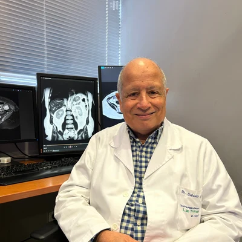
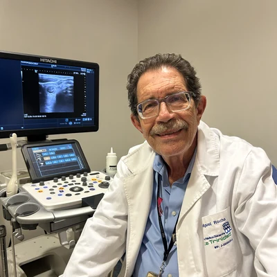
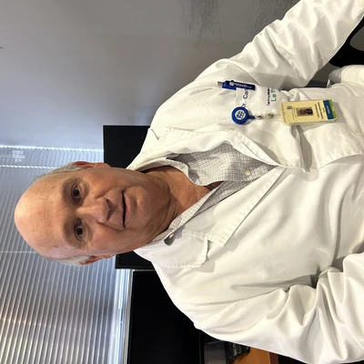
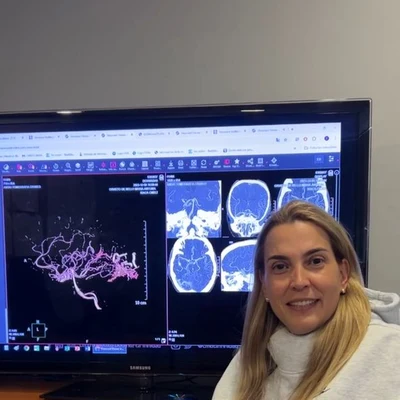
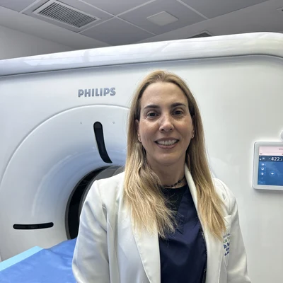
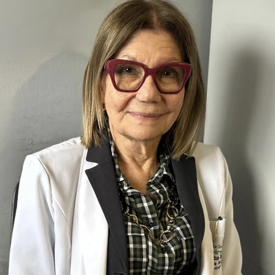
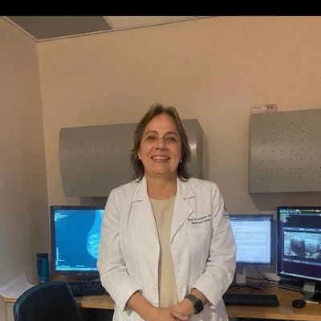

"Innovación que trasciende el diagnóstico"
Selecciona un bloque para ver el coordinador y los ponentes confirmados.
El cuerpo de radiólogos del Centro Médico Docente La Trinidad, columna vertebral del congreso desde su primera edición.
Especialistas invitados de trayectoria nacional e internacional que enriquecen el programa científico con sus investigaciones y experiencia clínica.
Elige entre el congreso principal o los talleres pre-congreso. Puedes combinar ambos.
Para radiólogos, residentes, médicos generales y estudiantes de medicina.
Inscribirme →Para técnico/licenciados/licenciados radiólogos, licenciados en imagenología y tecnólogos médicos.
Inscribirme →Taller práctico con Dr. Miguel Rocha. Diagnóstico ecográfico del aparato locomotor.
Inscribirme →Taller práctico con Dra. Carmen Delgado. Ecografía torácica y patología pleural.
Inscribirme →Taller para técnico/licenciados/licenciados radiólogos. Técnicas de mamografía y diagnóstico mamario.
Inscribirme →Centro Médico Docente La Trinidad, Caracas
El equipo de radiólogos adjuntos del Postgrado de Imagenología UC-CMDLT que hace posible el congreso año tras año.

Radiólogo adjunto del Postgrado de Imagenología UC-CMDLT. Miembro del comité organizador de TRINIRAD 2026.

Radiólogo adjunto del Postgrado de Imagenología UC-CMDLT. Instructor del Taller de Ultrasonido Musculoesquelético.

Radiólogo adjunto del Postgrado de Imagenología UC-CMDLT. Miembro del comité organizador de TRINIRAD 2026.

Radiólogo adjunta del Postgrado de Imagenología UC-CMDLT. Miembro del comité organizador de TRINIRAD 2026.

Radiólogo adjunta del Postgrado de Imagenología UC-CMDLT. Miembro del comité organizador de TRINIRAD 2026.

Directora del Postgrado de Imagenología UC-CMDLT. Especialista en Imagenología Pediátrica.

Radiólogo adjunta del Postgrado de Imagenología UC-CMDLT. Especialista en Imágenes Mamarias.
Empresas e instituciones comprometidas con la imagenología venezolana.
¿Tu empresa quiere patrocinar TRINIRAD 2026? Contáctanos →
Puedes inscribirte directamente desde nuestra página de inscripción, seleccionando tu categoría (médico o técnico/licenciado) y el taller de tu interés. Nuestro equipo te contactará con los datos de pago y confirmación.
Sí. Todos los asistentes reciben certificado digital avalado por CMDLT, SOVERADI y la Universidad de Carabobo, enviado por correo dentro de los 5 días hábiles posteriores al evento.
TRINIRAD es un evento principalmente presencial. Algunas ponencias podrían estar disponibles en formato virtual. Consulta disponibilidad escribiéndonos por WhatsApp.
Aceptamos transferencia bancaria y Zelle. Los datos de pago se envían luego de completar el formulario de inscripción. Para cualquier otra consulta sobre pagos, contáctanos por WhatsApp o email.